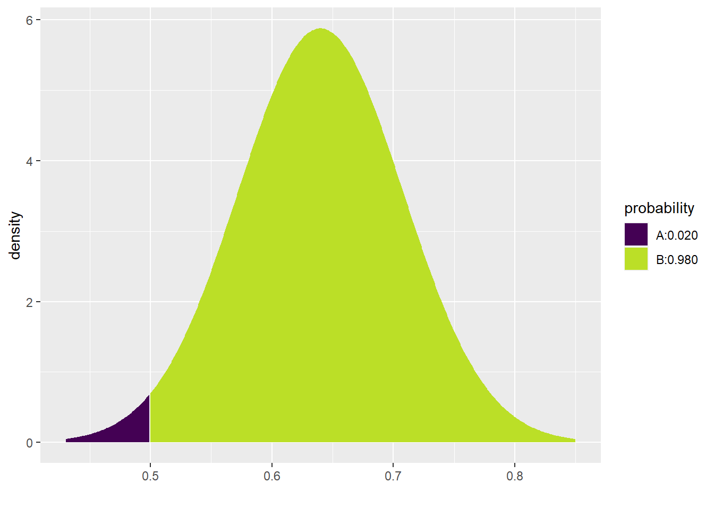

Chapter 14 Sampling distribution models
2.0
14.1 Introduction
In this chapter, we’ll revisit the idea of a sampling distribution model. We’ve already seen how useful it can be to simulate the process of simulating samples from a population and looking at the distribution of values that can occur by chance (i.e., sampling variability). We’ve also had some experience working with normal models. Under certain assumptions, we can use normal models to approximate our simulated sampling distributions.
14.1.2 Download the R notebook file
Check the upper-right corner in RStudio to make sure you’re in your intro_stats project. Then click on the following link to download this chapter as an R notebook file (.Rmd).
https://vectorposse.github.io/intro_stats/chapter_downloads/14-sampling_distribution_models.Rmd
Once the file is downloaded, move it to your project folder in RStudio and open it there.
14.2 Load packages
We load the standard tidyvese package. The mosaic package will provide coin flips.
library(tidyverse)
library(mosaic)14.3 Sampling variability and sample size
We know that when we sample from a population, our sample is “wrong”: even when the sample is representative of the population, we don’t actually expect our sample statistic to agree exactly with the population parameter of interest. Our prior simulations have demonstrated this. They are centered on the “true” value (for example, in a hypothesis test, the “true” value is the assumed null value), but there is some spread due to sampling variability.
Let’s explore this idea a little further, this time considering how sample size plays a role in sampling variability.
Suppose that a certain candidate in an election actually has 64% of the support of registered voters. We conduct a poll of 10 random people, gathering a representative (though not very large) sample of voters.
We can simulate this task in R by using the rflip command from the mosaic package. Remember that the default for a coin flip is a 50% probability of heads, so we have to change that if we want to model a candidate with 64% support.
set.seed(13579)
rflip(10, prob = 0.64)##
## Flipping 10 coins [ Prob(Heads) = 0.64 ] ...
##
## H T H T H H H T T H
##
## Number of Heads: 6 [Proportion Heads: 0.6]You can think of the above command as taking one random sample of size 10 and getting a certain number of “successes”, where a “success” is a person who votes for our candidate—here encoded as “heads”. In other words, of the 10 people in this particular sample, we surveyed 6 people who said they were voting for our candidate and 4 people who were not.
Using the do command, we can simulate many samples, all of size 10. Let’s take 1000 samples and store them in a variable called sims_1000_10.
set.seed(13579)
sims_1000_10 <- do(1000) * rflip(10, prob = 0.64)
sims_1000_10## n heads tails prop
## 1 10 5 5 0.5
## 2 10 6 4 0.6
## 3 10 8 2 0.8
## 4 10 7 3 0.7
## 5 10 8 2 0.8
## 6 10 7 3 0.7
## 7 10 5 5 0.5
## 8 10 7 3 0.7
## 9 10 6 4 0.6
## 10 10 6 4 0.6
## 11 10 6 4 0.6
## 12 10 7 3 0.7
## 13 10 6 4 0.6
## 14 10 8 2 0.8
## 15 10 6 4 0.6
## 16 10 9 1 0.9
## 17 10 5 5 0.5
## 18 10 6 4 0.6
## 19 10 9 1 0.9
## 20 10 5 5 0.5
## 21 10 5 5 0.5
## 22 10 5 5 0.5
## 23 10 4 6 0.4
## 24 10 6 4 0.6
## 25 10 9 1 0.9
## 26 10 4 6 0.4
## 27 10 8 2 0.8
## 28 10 8 2 0.8
## 29 10 8 2 0.8
## 30 10 3 7 0.3
## 31 10 8 2 0.8
## 32 10 8 2 0.8
## 33 10 5 5 0.5
## 34 10 4 6 0.4
## 35 10 7 3 0.7
## 36 10 6 4 0.6
## 37 10 5 5 0.5
## 38 10 5 5 0.5
## 39 10 6 4 0.6
## 40 10 8 2 0.8
## 41 10 7 3 0.7
## 42 10 6 4 0.6
## 43 10 8 2 0.8
## 44 10 7 3 0.7
## 45 10 5 5 0.5
## 46 10 9 1 0.9
## 47 10 8 2 0.8
## 48 10 9 1 0.9
## 49 10 8 2 0.8
## 50 10 6 4 0.6
## 51 10 5 5 0.5
## 52 10 7 3 0.7
## 53 10 9 1 0.9
## 54 10 7 3 0.7
## 55 10 7 3 0.7
## 56 10 7 3 0.7
## 57 10 5 5 0.5
## 58 10 8 2 0.8
## 59 10 4 6 0.4
## 60 10 7 3 0.7
## 61 10 5 5 0.5
## 62 10 6 4 0.6
## 63 10 5 5 0.5
## 64 10 8 2 0.8
## 65 10 6 4 0.6
## 66 10 7 3 0.7
## 67 10 7 3 0.7
## 68 10 4 6 0.4
## 69 10 7 3 0.7
## 70 10 7 3 0.7
## 71 10 7 3 0.7
## 72 10 3 7 0.3
## 73 10 6 4 0.6
## 74 10 6 4 0.6
## 75 10 5 5 0.5
## 76 10 7 3 0.7
## 77 10 6 4 0.6
## 78 10 5 5 0.5
## 79 10 4 6 0.4
## 80 10 9 1 0.9
## 81 10 5 5 0.5
## 82 10 8 2 0.8
## 83 10 5 5 0.5
## 84 10 7 3 0.7
## 85 10 8 2 0.8
## 86 10 4 6 0.4
## 87 10 6 4 0.6
## 88 10 6 4 0.6
## 89 10 8 2 0.8
## 90 10 8 2 0.8
## 91 10 6 4 0.6
## 92 10 8 2 0.8
## 93 10 8 2 0.8
## 94 10 5 5 0.5
## 95 10 7 3 0.7
## 96 10 9 1 0.9
## 97 10 8 2 0.8
## 98 10 5 5 0.5
## 99 10 8 2 0.8
## 100 10 8 2 0.8
## 101 10 6 4 0.6
## 102 10 6 4 0.6
## 103 10 5 5 0.5
## 104 10 5 5 0.5
## 105 10 8 2 0.8
## 106 10 5 5 0.5
## 107 10 6 4 0.6
## 108 10 8 2 0.8
## 109 10 5 5 0.5
## 110 10 6 4 0.6
## 111 10 7 3 0.7
## 112 10 9 1 0.9
## 113 10 8 2 0.8
## 114 10 6 4 0.6
## 115 10 9 1 0.9
## 116 10 7 3 0.7
## 117 10 8 2 0.8
## 118 10 4 6 0.4
## 119 10 9 1 0.9
## 120 10 6 4 0.6
## 121 10 6 4 0.6
## 122 10 8 2 0.8
## 123 10 5 5 0.5
## 124 10 6 4 0.6
## 125 10 7 3 0.7
## 126 10 7 3 0.7
## 127 10 5 5 0.5
## 128 10 4 6 0.4
## 129 10 4 6 0.4
## 130 10 4 6 0.4
## 131 10 5 5 0.5
## 132 10 5 5 0.5
## 133 10 7 3 0.7
## 134 10 5 5 0.5
## 135 10 8 2 0.8
## 136 10 7 3 0.7
## 137 10 6 4 0.6
## 138 10 5 5 0.5
## 139 10 8 2 0.8
## 140 10 5 5 0.5
## 141 10 8 2 0.8
## 142 10 6 4 0.6
## 143 10 3 7 0.3
## 144 10 5 5 0.5
## 145 10 5 5 0.5
## 146 10 7 3 0.7
## 147 10 7 3 0.7
## 148 10 8 2 0.8
## 149 10 7 3 0.7
## 150 10 6 4 0.6
## 151 10 10 0 1.0
## 152 10 8 2 0.8
## 153 10 7 3 0.7
## 154 10 4 6 0.4
## 155 10 5 5 0.5
## 156 10 9 1 0.9
## 157 10 6 4 0.6
## 158 10 10 0 1.0
## 159 10 6 4 0.6
## 160 10 7 3 0.7
## 161 10 8 2 0.8
## 162 10 7 3 0.7
## 163 10 6 4 0.6
## 164 10 7 3 0.7
## 165 10 6 4 0.6
## 166 10 8 2 0.8
## 167 10 4 6 0.4
## 168 10 7 3 0.7
## 169 10 6 4 0.6
## 170 10 8 2 0.8
## 171 10 6 4 0.6
## 172 10 7 3 0.7
## 173 10 4 6 0.4
## 174 10 5 5 0.5
## 175 10 6 4 0.6
## 176 10 7 3 0.7
## 177 10 4 6 0.4
## 178 10 4 6 0.4
## 179 10 7 3 0.7
## 180 10 8 2 0.8
## 181 10 7 3 0.7
## 182 10 4 6 0.4
## 183 10 7 3 0.7
## 184 10 5 5 0.5
## 185 10 4 6 0.4
## 186 10 3 7 0.3
## 187 10 5 5 0.5
## 188 10 6 4 0.6
## 189 10 6 4 0.6
## 190 10 7 3 0.7
## 191 10 7 3 0.7
## 192 10 6 4 0.6
## 193 10 6 4 0.6
## 194 10 6 4 0.6
## 195 10 8 2 0.8
## 196 10 9 1 0.9
## 197 10 7 3 0.7
## 198 10 4 6 0.4
## 199 10 6 4 0.6
## 200 10 8 2 0.8
## 201 10 5 5 0.5
## 202 10 8 2 0.8
## 203 10 5 5 0.5
## 204 10 6 4 0.6
## 205 10 9 1 0.9
## 206 10 6 4 0.6
## 207 10 6 4 0.6
## 208 10 3 7 0.3
## 209 10 4 6 0.4
## 210 10 5 5 0.5
## 211 10 6 4 0.6
## 212 10 8 2 0.8
## 213 10 7 3 0.7
## 214 10 6 4 0.6
## 215 10 7 3 0.7
## 216 10 6 4 0.6
## 217 10 6 4 0.6
## 218 10 7 3 0.7
## 219 10 5 5 0.5
## 220 10 6 4 0.6
## 221 10 7 3 0.7
## 222 10 9 1 0.9
## 223 10 6 4 0.6
## 224 10 9 1 0.9
## 225 10 4 6 0.4
## 226 10 7 3 0.7
## 227 10 5 5 0.5
## 228 10 6 4 0.6
## 229 10 6 4 0.6
## 230 10 7 3 0.7
## 231 10 6 4 0.6
## 232 10 6 4 0.6
## 233 10 8 2 0.8
## 234 10 6 4 0.6
## 235 10 7 3 0.7
## 236 10 6 4 0.6
## 237 10 8 2 0.8
## 238 10 5 5 0.5
## 239 10 7 3 0.7
## 240 10 6 4 0.6
## 241 10 4 6 0.4
## 242 10 4 6 0.4
## 243 10 7 3 0.7
## 244 10 7 3 0.7
## 245 10 6 4 0.6
## 246 10 2 8 0.2
## 247 10 7 3 0.7
## 248 10 7 3 0.7
## 249 10 6 4 0.6
## 250 10 7 3 0.7
## 251 10 8 2 0.8
## 252 10 7 3 0.7
## 253 10 7 3 0.7
## 254 10 8 2 0.8
## 255 10 7 3 0.7
## 256 10 6 4 0.6
## 257 10 8 2 0.8
## 258 10 7 3 0.7
## 259 10 7 3 0.7
## 260 10 5 5 0.5
## 261 10 7 3 0.7
## 262 10 5 5 0.5
## 263 10 5 5 0.5
## 264 10 7 3 0.7
## 265 10 5 5 0.5
## 266 10 4 6 0.4
## 267 10 7 3 0.7
## 268 10 8 2 0.8
## 269 10 8 2 0.8
## 270 10 4 6 0.4
## 271 10 8 2 0.8
## 272 10 6 4 0.6
## 273 10 7 3 0.7
## 274 10 9 1 0.9
## 275 10 8 2 0.8
## 276 10 4 6 0.4
## 277 10 8 2 0.8
## 278 10 6 4 0.6
## 279 10 6 4 0.6
## 280 10 7 3 0.7
## 281 10 9 1 0.9
## 282 10 10 0 1.0
## 283 10 8 2 0.8
## 284 10 9 1 0.9
## 285 10 9 1 0.9
## 286 10 7 3 0.7
## 287 10 6 4 0.6
## 288 10 8 2 0.8
## 289 10 6 4 0.6
## 290 10 5 5 0.5
## 291 10 7 3 0.7
## 292 10 7 3 0.7
## 293 10 5 5 0.5
## 294 10 6 4 0.6
## 295 10 5 5 0.5
## 296 10 5 5 0.5
## 297 10 4 6 0.4
## 298 10 8 2 0.8
## 299 10 9 1 0.9
## 300 10 6 4 0.6
## 301 10 5 5 0.5
## 302 10 5 5 0.5
## 303 10 9 1 0.9
## 304 10 5 5 0.5
## 305 10 5 5 0.5
## 306 10 6 4 0.6
## 307 10 6 4 0.6
## 308 10 9 1 0.9
## 309 10 9 1 0.9
## 310 10 6 4 0.6
## 311 10 7 3 0.7
## 312 10 8 2 0.8
## 313 10 7 3 0.7
## 314 10 8 2 0.8
## 315 10 3 7 0.3
## 316 10 7 3 0.7
## 317 10 6 4 0.6
## 318 10 7 3 0.7
## 319 10 7 3 0.7
## 320 10 8 2 0.8
## 321 10 8 2 0.8
## 322 10 9 1 0.9
## 323 10 8 2 0.8
## 324 10 7 3 0.7
## 325 10 7 3 0.7
## 326 10 8 2 0.8
## 327 10 7 3 0.7
## 328 10 7 3 0.7
## 329 10 4 6 0.4
## 330 10 5 5 0.5
## 331 10 7 3 0.7
## 332 10 7 3 0.7
## 333 10 5 5 0.5
## 334 10 6 4 0.6
## 335 10 8 2 0.8
## 336 10 5 5 0.5
## 337 10 6 4 0.6
## 338 10 7 3 0.7
## 339 10 9 1 0.9
## 340 10 7 3 0.7
## 341 10 6 4 0.6
## 342 10 4 6 0.4
## 343 10 5 5 0.5
## 344 10 7 3 0.7
## 345 10 7 3 0.7
## 346 10 7 3 0.7
## 347 10 6 4 0.6
## 348 10 7 3 0.7
## 349 10 6 4 0.6
## 350 10 8 2 0.8
## 351 10 5 5 0.5
## 352 10 10 0 1.0
## 353 10 5 5 0.5
## 354 10 7 3 0.7
## 355 10 7 3 0.7
## 356 10 5 5 0.5
## 357 10 7 3 0.7
## 358 10 7 3 0.7
## 359 10 5 5 0.5
## 360 10 8 2 0.8
## 361 10 8 2 0.8
## 362 10 6 4 0.6
## 363 10 6 4 0.6
## 364 10 6 4 0.6
## 365 10 5 5 0.5
## 366 10 6 4 0.6
## 367 10 5 5 0.5
## 368 10 7 3 0.7
## 369 10 8 2 0.8
## 370 10 4 6 0.4
## 371 10 4 6 0.4
## 372 10 6 4 0.6
## 373 10 7 3 0.7
## 374 10 6 4 0.6
## 375 10 6 4 0.6
## 376 10 8 2 0.8
## 377 10 5 5 0.5
## 378 10 7 3 0.7
## 379 10 6 4 0.6
## 380 10 6 4 0.6
## 381 10 4 6 0.4
## 382 10 4 6 0.4
## 383 10 6 4 0.6
## 384 10 8 2 0.8
## 385 10 5 5 0.5
## 386 10 6 4 0.6
## 387 10 7 3 0.7
## 388 10 6 4 0.6
## 389 10 8 2 0.8
## 390 10 8 2 0.8
## 391 10 6 4 0.6
## 392 10 5 5 0.5
## 393 10 8 2 0.8
## 394 10 5 5 0.5
## 395 10 6 4 0.6
## 396 10 6 4 0.6
## 397 10 5 5 0.5
## 398 10 4 6 0.4
## 399 10 7 3 0.7
## 400 10 7 3 0.7
## 401 10 9 1 0.9
## 402 10 6 4 0.6
## 403 10 6 4 0.6
## 404 10 5 5 0.5
## 405 10 8 2 0.8
## 406 10 5 5 0.5
## 407 10 9 1 0.9
## 408 10 7 3 0.7
## 409 10 6 4 0.6
## 410 10 6 4 0.6
## 411 10 9 1 0.9
## 412 10 4 6 0.4
## 413 10 4 6 0.4
## 414 10 7 3 0.7
## 415 10 7 3 0.7
## 416 10 6 4 0.6
## 417 10 5 5 0.5
## 418 10 6 4 0.6
## 419 10 6 4 0.6
## 420 10 6 4 0.6
## 421 10 7 3 0.7
## 422 10 8 2 0.8
## 423 10 6 4 0.6
## 424 10 7 3 0.7
## 425 10 8 2 0.8
## 426 10 5 5 0.5
## 427 10 8 2 0.8
## 428 10 8 2 0.8
## 429 10 6 4 0.6
## 430 10 5 5 0.5
## 431 10 4 6 0.4
## 432 10 7 3 0.7
## 433 10 6 4 0.6
## 434 10 6 4 0.6
## 435 10 9 1 0.9
## 436 10 5 5 0.5
## 437 10 5 5 0.5
## 438 10 6 4 0.6
## 439 10 6 4 0.6
## 440 10 7 3 0.7
## 441 10 6 4 0.6
## 442 10 8 2 0.8
## 443 10 6 4 0.6
## 444 10 5 5 0.5
## 445 10 7 3 0.7
## 446 10 6 4 0.6
## 447 10 5 5 0.5
## 448 10 7 3 0.7
## 449 10 6 4 0.6
## 450 10 5 5 0.5
## 451 10 9 1 0.9
## 452 10 8 2 0.8
## 453 10 8 2 0.8
## 454 10 5 5 0.5
## 455 10 6 4 0.6
## 456 10 5 5 0.5
## 457 10 8 2 0.8
## 458 10 8 2 0.8
## 459 10 8 2 0.8
## 460 10 5 5 0.5
## 461 10 7 3 0.7
## 462 10 5 5 0.5
## 463 10 5 5 0.5
## 464 10 8 2 0.8
## 465 10 4 6 0.4
## 466 10 6 4 0.6
## 467 10 6 4 0.6
## 468 10 8 2 0.8
## 469 10 8 2 0.8
## 470 10 6 4 0.6
## 471 10 6 4 0.6
## 472 10 10 0 1.0
## 473 10 4 6 0.4
## 474 10 8 2 0.8
## 475 10 6 4 0.6
## 476 10 6 4 0.6
## 477 10 9 1 0.9
## 478 10 7 3 0.7
## 479 10 7 3 0.7
## 480 10 5 5 0.5
## 481 10 7 3 0.7
## 482 10 5 5 0.5
## 483 10 5 5 0.5
## 484 10 8 2 0.8
## 485 10 7 3 0.7
## 486 10 7 3 0.7
## 487 10 6 4 0.6
## 488 10 6 4 0.6
## 489 10 6 4 0.6
## 490 10 8 2 0.8
## 491 10 8 2 0.8
## 492 10 2 8 0.2
## 493 10 5 5 0.5
## 494 10 8 2 0.8
## 495 10 7 3 0.7
## 496 10 8 2 0.8
## 497 10 5 5 0.5
## 498 10 7 3 0.7
## 499 10 7 3 0.7
## 500 10 9 1 0.9
## 501 10 6 4 0.6
## 502 10 4 6 0.4
## 503 10 6 4 0.6
## 504 10 5 5 0.5
## 505 10 4 6 0.4
## 506 10 7 3 0.7
## 507 10 7 3 0.7
## 508 10 5 5 0.5
## 509 10 6 4 0.6
## 510 10 6 4 0.6
## 511 10 7 3 0.7
## 512 10 6 4 0.6
## 513 10 3 7 0.3
## 514 10 7 3 0.7
## 515 10 7 3 0.7
## 516 10 6 4 0.6
## 517 10 6 4 0.6
## 518 10 6 4 0.6
## 519 10 6 4 0.6
## 520 10 8 2 0.8
## 521 10 6 4 0.6
## 522 10 8 2 0.8
## 523 10 8 2 0.8
## 524 10 7 3 0.7
## 525 10 8 2 0.8
## 526 10 7 3 0.7
## 527 10 7 3 0.7
## 528 10 5 5 0.5
## 529 10 6 4 0.6
## 530 10 8 2 0.8
## 531 10 6 4 0.6
## 532 10 4 6 0.4
## 533 10 5 5 0.5
## 534 10 5 5 0.5
## 535 10 4 6 0.4
## 536 10 7 3 0.7
## 537 10 6 4 0.6
## 538 10 9 1 0.9
## 539 10 7 3 0.7
## 540 10 4 6 0.4
## 541 10 7 3 0.7
## 542 10 3 7 0.3
## 543 10 10 0 1.0
## 544 10 5 5 0.5
## 545 10 7 3 0.7
## 546 10 8 2 0.8
## 547 10 5 5 0.5
## 548 10 6 4 0.6
## 549 10 7 3 0.7
## 550 10 7 3 0.7
## 551 10 5 5 0.5
## 552 10 7 3 0.7
## 553 10 5 5 0.5
## 554 10 7 3 0.7
## 555 10 6 4 0.6
## 556 10 7 3 0.7
## 557 10 6 4 0.6
## 558 10 5 5 0.5
## 559 10 6 4 0.6
## 560 10 7 3 0.7
## 561 10 5 5 0.5
## 562 10 6 4 0.6
## 563 10 5 5 0.5
## 564 10 7 3 0.7
## 565 10 7 3 0.7
## 566 10 6 4 0.6
## 567 10 4 6 0.4
## 568 10 5 5 0.5
## 569 10 6 4 0.6
## 570 10 4 6 0.4
## 571 10 8 2 0.8
## 572 10 7 3 0.7
## 573 10 7 3 0.7
## 574 10 7 3 0.7
## 575 10 8 2 0.8
## 576 10 6 4 0.6
## 577 10 5 5 0.5
## 578 10 8 2 0.8
## 579 10 5 5 0.5
## 580 10 6 4 0.6
## 581 10 6 4 0.6
## 582 10 7 3 0.7
## 583 10 7 3 0.7
## 584 10 8 2 0.8
## 585 10 7 3 0.7
## 586 10 7 3 0.7
## 587 10 6 4 0.6
## 588 10 5 5 0.5
## 589 10 8 2 0.8
## 590 10 8 2 0.8
## 591 10 8 2 0.8
## 592 10 6 4 0.6
## 593 10 7 3 0.7
## 594 10 6 4 0.6
## 595 10 7 3 0.7
## 596 10 5 5 0.5
## 597 10 6 4 0.6
## 598 10 6 4 0.6
## 599 10 8 2 0.8
## 600 10 10 0 1.0
## 601 10 5 5 0.5
## 602 10 4 6 0.4
## 603 10 9 1 0.9
## 604 10 7 3 0.7
## 605 10 8 2 0.8
## 606 10 7 3 0.7
## 607 10 5 5 0.5
## 608 10 4 6 0.4
## 609 10 7 3 0.7
## 610 10 7 3 0.7
## 611 10 7 3 0.7
## 612 10 8 2 0.8
## 613 10 6 4 0.6
## 614 10 7 3 0.7
## 615 10 7 3 0.7
## 616 10 7 3 0.7
## 617 10 7 3 0.7
## 618 10 5 5 0.5
## 619 10 6 4 0.6
## 620 10 7 3 0.7
## 621 10 6 4 0.6
## 622 10 6 4 0.6
## 623 10 6 4 0.6
## 624 10 6 4 0.6
## 625 10 8 2 0.8
## 626 10 7 3 0.7
## 627 10 4 6 0.4
## 628 10 6 4 0.6
## 629 10 5 5 0.5
## 630 10 4 6 0.4
## 631 10 8 2 0.8
## 632 10 5 5 0.5
## 633 10 7 3 0.7
## 634 10 6 4 0.6
## 635 10 5 5 0.5
## 636 10 6 4 0.6
## 637 10 7 3 0.7
## 638 10 8 2 0.8
## 639 10 6 4 0.6
## 640 10 5 5 0.5
## 641 10 6 4 0.6
## 642 10 9 1 0.9
## 643 10 9 1 0.9
## 644 10 4 6 0.4
## 645 10 8 2 0.8
## 646 10 8 2 0.8
## 647 10 7 3 0.7
## 648 10 8 2 0.8
## 649 10 9 1 0.9
## 650 10 7 3 0.7
## 651 10 5 5 0.5
## 652 10 5 5 0.5
## 653 10 6 4 0.6
## 654 10 8 2 0.8
## 655 10 5 5 0.5
## 656 10 8 2 0.8
## 657 10 9 1 0.9
## 658 10 8 2 0.8
## 659 10 9 1 0.9
## 660 10 7 3 0.7
## 661 10 6 4 0.6
## 662 10 8 2 0.8
## 663 10 6 4 0.6
## 664 10 7 3 0.7
## 665 10 7 3 0.7
## 666 10 8 2 0.8
## 667 10 6 4 0.6
## 668 10 7 3 0.7
## 669 10 6 4 0.6
## 670 10 10 0 1.0
## 671 10 5 5 0.5
## 672 10 7 3 0.7
## 673 10 7 3 0.7
## 674 10 8 2 0.8
## 675 10 7 3 0.7
## 676 10 4 6 0.4
## 677 10 5 5 0.5
## 678 10 7 3 0.7
## 679 10 3 7 0.3
## 680 10 6 4 0.6
## 681 10 6 4 0.6
## 682 10 6 4 0.6
## 683 10 6 4 0.6
## 684 10 7 3 0.7
## 685 10 7 3 0.7
## 686 10 4 6 0.4
## 687 10 6 4 0.6
## 688 10 6 4 0.6
## 689 10 6 4 0.6
## 690 10 6 4 0.6
## 691 10 8 2 0.8
## 692 10 8 2 0.8
## 693 10 7 3 0.7
## 694 10 6 4 0.6
## 695 10 8 2 0.8
## 696 10 7 3 0.7
## 697 10 8 2 0.8
## 698 10 8 2 0.8
## 699 10 5 5 0.5
## 700 10 9 1 0.9
## 701 10 6 4 0.6
## 702 10 7 3 0.7
## 703 10 7 3 0.7
## 704 10 6 4 0.6
## 705 10 7 3 0.7
## 706 10 8 2 0.8
## 707 10 5 5 0.5
## 708 10 7 3 0.7
## 709 10 6 4 0.6
## 710 10 6 4 0.6
## 711 10 7 3 0.7
## 712 10 7 3 0.7
## 713 10 8 2 0.8
## 714 10 4 6 0.4
## 715 10 6 4 0.6
## 716 10 5 5 0.5
## 717 10 8 2 0.8
## 718 10 6 4 0.6
## 719 10 6 4 0.6
## 720 10 4 6 0.4
## 721 10 7 3 0.7
## 722 10 6 4 0.6
## 723 10 9 1 0.9
## 724 10 7 3 0.7
## 725 10 5 5 0.5
## 726 10 7 3 0.7
## 727 10 6 4 0.6
## 728 10 6 4 0.6
## 729 10 5 5 0.5
## 730 10 8 2 0.8
## 731 10 7 3 0.7
## 732 10 6 4 0.6
## 733 10 5 5 0.5
## 734 10 6 4 0.6
## 735 10 5 5 0.5
## 736 10 4 6 0.4
## 737 10 7 3 0.7
## 738 10 7 3 0.7
## 739 10 4 6 0.4
## 740 10 7 3 0.7
## 741 10 8 2 0.8
## 742 10 6 4 0.6
## 743 10 6 4 0.6
## 744 10 7 3 0.7
## 745 10 10 0 1.0
## 746 10 4 6 0.4
## 747 10 8 2 0.8
## 748 10 7 3 0.7
## 749 10 7 3 0.7
## 750 10 4 6 0.4
## 751 10 9 1 0.9
## 752 10 7 3 0.7
## 753 10 7 3 0.7
## 754 10 9 1 0.9
## 755 10 5 5 0.5
## 756 10 8 2 0.8
## 757 10 5 5 0.5
## 758 10 8 2 0.8
## 759 10 4 6 0.4
## 760 10 8 2 0.8
## 761 10 7 3 0.7
## 762 10 8 2 0.8
## 763 10 6 4 0.6
## 764 10 8 2 0.8
## 765 10 3 7 0.3
## 766 10 9 1 0.9
## 767 10 7 3 0.7
## 768 10 6 4 0.6
## 769 10 3 7 0.3
## 770 10 4 6 0.4
## 771 10 6 4 0.6
## 772 10 6 4 0.6
## 773 10 5 5 0.5
## 774 10 4 6 0.4
## 775 10 5 5 0.5
## 776 10 7 3 0.7
## 777 10 5 5 0.5
## 778 10 8 2 0.8
## 779 10 8 2 0.8
## 780 10 6 4 0.6
## 781 10 7 3 0.7
## 782 10 6 4 0.6
## 783 10 6 4 0.6
## 784 10 6 4 0.6
## 785 10 7 3 0.7
## 786 10 7 3 0.7
## 787 10 6 4 0.6
## 788 10 6 4 0.6
## 789 10 8 2 0.8
## 790 10 6 4 0.6
## 791 10 9 1 0.9
## 792 10 5 5 0.5
## 793 10 8 2 0.8
## 794 10 4 6 0.4
## 795 10 6 4 0.6
## 796 10 5 5 0.5
## 797 10 6 4 0.6
## 798 10 6 4 0.6
## 799 10 7 3 0.7
## 800 10 3 7 0.3
## 801 10 4 6 0.4
## 802 10 6 4 0.6
## 803 10 5 5 0.5
## 804 10 7 3 0.7
## 805 10 8 2 0.8
## 806 10 7 3 0.7
## 807 10 7 3 0.7
## 808 10 4 6 0.4
## 809 10 6 4 0.6
## 810 10 8 2 0.8
## 811 10 4 6 0.4
## 812 10 7 3 0.7
## 813 10 9 1 0.9
## 814 10 7 3 0.7
## 815 10 7 3 0.7
## 816 10 6 4 0.6
## 817 10 5 5 0.5
## 818 10 8 2 0.8
## 819 10 6 4 0.6
## 820 10 6 4 0.6
## 821 10 5 5 0.5
## 822 10 8 2 0.8
## 823 10 6 4 0.6
## 824 10 4 6 0.4
## 825 10 5 5 0.5
## 826 10 3 7 0.3
## 827 10 7 3 0.7
## 828 10 9 1 0.9
## 829 10 8 2 0.8
## 830 10 7 3 0.7
## 831 10 6 4 0.6
## 832 10 5 5 0.5
## 833 10 8 2 0.8
## 834 10 6 4 0.6
## 835 10 8 2 0.8
## 836 10 5 5 0.5
## 837 10 10 0 1.0
## 838 10 5 5 0.5
## 839 10 4 6 0.4
## 840 10 7 3 0.7
## 841 10 7 3 0.7
## 842 10 7 3 0.7
## 843 10 4 6 0.4
## 844 10 7 3 0.7
## 845 10 7 3 0.7
## 846 10 7 3 0.7
## 847 10 6 4 0.6
## 848 10 8 2 0.8
## 849 10 6 4 0.6
## 850 10 5 5 0.5
## 851 10 7 3 0.7
## 852 10 7 3 0.7
## 853 10 4 6 0.4
## 854 10 7 3 0.7
## 855 10 8 2 0.8
## 856 10 2 8 0.2
## 857 10 9 1 0.9
## 858 10 6 4 0.6
## 859 10 7 3 0.7
## 860 10 5 5 0.5
## 861 10 7 3 0.7
## 862 10 6 4 0.6
## 863 10 5 5 0.5
## 864 10 7 3 0.7
## 865 10 8 2 0.8
## 866 10 4 6 0.4
## 867 10 4 6 0.4
## 868 10 5 5 0.5
## 869 10 4 6 0.4
## 870 10 4 6 0.4
## 871 10 5 5 0.5
## 872 10 6 4 0.6
## 873 10 4 6 0.4
## 874 10 5 5 0.5
## 875 10 7 3 0.7
## 876 10 10 0 1.0
## 877 10 6 4 0.6
## 878 10 7 3 0.7
## 879 10 5 5 0.5
## 880 10 9 1 0.9
## 881 10 7 3 0.7
## 882 10 5 5 0.5
## 883 10 5 5 0.5
## 884 10 8 2 0.8
## 885 10 6 4 0.6
## 886 10 5 5 0.5
## 887 10 7 3 0.7
## 888 10 7 3 0.7
## 889 10 6 4 0.6
## 890 10 7 3 0.7
## 891 10 9 1 0.9
## 892 10 7 3 0.7
## 893 10 5 5 0.5
## 894 10 8 2 0.8
## 895 10 6 4 0.6
## 896 10 5 5 0.5
## 897 10 6 4 0.6
## 898 10 6 4 0.6
## 899 10 6 4 0.6
## 900 10 8 2 0.8
## 901 10 8 2 0.8
## 902 10 7 3 0.7
## 903 10 7 3 0.7
## 904 10 3 7 0.3
## 905 10 9 1 0.9
## 906 10 4 6 0.4
## 907 10 6 4 0.6
## 908 10 9 1 0.9
## 909 10 7 3 0.7
## 910 10 7 3 0.7
## 911 10 8 2 0.8
## 912 10 4 6 0.4
## 913 10 6 4 0.6
## 914 10 7 3 0.7
## 915 10 8 2 0.8
## 916 10 5 5 0.5
## 917 10 7 3 0.7
## 918 10 5 5 0.5
## 919 10 9 1 0.9
## 920 10 7 3 0.7
## 921 10 6 4 0.6
## 922 10 6 4 0.6
## 923 10 8 2 0.8
## 924 10 6 4 0.6
## 925 10 7 3 0.7
## 926 10 5 5 0.5
## 927 10 5 5 0.5
## 928 10 5 5 0.5
## 929 10 4 6 0.4
## 930 10 6 4 0.6
## 931 10 3 7 0.3
## 932 10 5 5 0.5
## 933 10 7 3 0.7
## 934 10 7 3 0.7
## 935 10 9 1 0.9
## 936 10 7 3 0.7
## 937 10 6 4 0.6
## 938 10 6 4 0.6
## 939 10 7 3 0.7
## 940 10 7 3 0.7
## 941 10 7 3 0.7
## 942 10 7 3 0.7
## 943 10 9 1 0.9
## 944 10 8 2 0.8
## 945 10 7 3 0.7
## 946 10 7 3 0.7
## 947 10 5 5 0.5
## 948 10 5 5 0.5
## 949 10 7 3 0.7
## 950 10 7 3 0.7
## 951 10 6 4 0.6
## 952 10 4 6 0.4
## 953 10 7 3 0.7
## 954 10 5 5 0.5
## 955 10 8 2 0.8
## 956 10 6 4 0.6
## 957 10 8 2 0.8
## 958 10 6 4 0.6
## 959 10 7 3 0.7
## 960 10 6 4 0.6
## 961 10 9 1 0.9
## 962 10 6 4 0.6
## 963 10 5 5 0.5
## 964 10 5 5 0.5
## 965 10 6 4 0.6
## 966 10 7 3 0.7
## 967 10 7 3 0.7
## 968 10 8 2 0.8
## 969 10 7 3 0.7
## 970 10 7 3 0.7
## 971 10 7 3 0.7
## 972 10 4 6 0.4
## 973 10 9 1 0.9
## 974 10 6 4 0.6
## 975 10 6 4 0.6
## 976 10 8 2 0.8
## 977 10 7 3 0.7
## 978 10 7 3 0.7
## 979 10 8 2 0.8
## 980 10 3 7 0.3
## 981 10 9 1 0.9
## 982 10 4 6 0.4
## 983 10 5 5 0.5
## 984 10 6 4 0.6
## 985 10 9 1 0.9
## 986 10 5 5 0.5
## 987 10 4 6 0.4
## 988 10 8 2 0.8
## 989 10 6 4 0.6
## 990 10 5 5 0.5
## 991 10 9 1 0.9
## 992 10 7 3 0.7
## 993 10 6 4 0.6
## 994 10 5 5 0.5
## 995 10 6 4 0.6
## 996 10 6 4 0.6
## 997 10 5 5 0.5
## 998 10 10 0 1.0
## 999 10 6 4 0.6
## 1000 10 7 3 0.7Note that with 10 people, it is impossible to get a 64% success rate in any given sample. (That would be 6.4 people!) Nevertheless, we can see that many of the samples gave us around 5–8 successes, as we’d expect when the true population rate is 64%. Also, the mean number of successes across all simulations is 6.414, which is very close to 6.4.
Instead of focusing on the total number of successes, let’s use the proportion of successes in each sample. We can graph our simulated proportions, just as we’ve done in previous chapters. (The fancy stuff in scale_x_continuous is just making sure that the x-axis goes from 0 to 1 and that the tick marks appear as multiples of 0.1.)
ggplot(sims_1000_10, aes(x = prop)) +
geom_histogram(binwidth = 0.05) +
scale_x_continuous(limits = c(0, 1.1),
breaks = seq(0, 1, 0.1))## Warning: Removed 2 rows containing missing values (`geom_bar()`).
Because each sample has size 10, the proportion of successes can only be multiples of 0.1. Although the distribution is somewhat normally shaped, it is discrete (no values in between the bars) and there is an appreciable left skew.
What happens if we increase the sample size to 20? (The binwidth has to change to see the discrete bars.)
set.seed(13579)
sims_1000_20 <- do(1000) * rflip(20, prob = 0.64)ggplot(sims_1000_20, aes(x = prop)) +
geom_histogram(binwidth = 0.025) +
scale_x_continuous(limits = c(0, 1.1),
breaks = seq(0, 1, 0.1))## Warning: Removed 2 rows containing missing values (`geom_bar()`).
Exercise 1
Explain how the distribution of simulations has changed going from a sample size of 10 to a sample size of 20.
Please write up your answer here.
Exercise 2(a)
Run a set of simulations yourself, this time with samples of size 50. Use the same number of simulations (1000) and the same ggplot code from above (especially the scale_x_continuous option) so that the x-axis is scaled identically to the previous cases, but change the binwidth to 0.01.
set.seed(13579)
# Add code here to simulate 1000 random samples of size 50 and plot them.14.4 The sampling distribution model and the standard error
In the last chapter on normal models, we mentioned briefly the Central Limit Theorem and the fact that under certain assumptions, our simulations would look normally distributed. More concretely, the Central Limit Theorem tells us that as our sample size increases, the distribution of sample proportions looks more and more like a normal model. This model is called the sampling distribution model because it describes how many different samples from a population should be distributed.
Which normal model do we use? In other words, what is the mean and standard deviation of a normal model that describes a simulation of repeated samples?
The simulations above are all centered at the same place, 0.64. This is no surprise. If the true population proportion is 0.64, then we expect most of our samples to be around 64% (even if, as above, it is actually impossible to get exactly 64% in any given sample).
But what about the standard deviation? It seems to be changing with each sample size.
Exercise 3
Looking at your simulations above, how does the standard deviation appear to change as the sample size increases? Intuitively, why do you think this happens? (Hint: think about the relationship between larger sample sizes and accuracy.)
Please write up your answer here.
The standard deviation of a sampling distribution is usually called the standard error. (The use of the word “error” in statistics does not mean that anyone made a mistake. A better word for error would be “uncertainty” or even just “variability”.)
There is some complicated mathematics involved in figuring out the standard error, so I’ll just tell you what it is. If \(p\) is the true population proportion, then the standard error is
\[ \sqrt{\frac{p(1 - p)}{n}}. \]
Therefore, if the sample size is large enough, the sampling distribution model is nearly normal, and the correct normal model is
\[ N\left(p, \sqrt{\frac{p(1 - p)}{n}}\right). \]
In our election example, we can calculate the standard error for a sample of size 10:
\[ \sqrt{\frac{p(1 - p)}{n}} = \sqrt{\frac{0.64(1 - 0.64)}{10}} = 0.152. \]
We can do this easily using inline R code. (Remember that R is nothing more than a glorified calculator.) If a candidate has 64% of the vote and we take a sample of size 10, the standard error is 0.1517893. In other words, the sampling distribution model is
\[ N(0.64, 0.152). \]
For a sample of size 20, the standard error is 0.1073313 and the sampling distribution model is
\[ N(0.64, 0.107). \]
14.5 Conditions
Like anything in statistics, there are assumptions that have to be met before applying any technique. We must check that certain conditions are true before we can reasonably make the necessary assumptions required by our model.
When we want to use a normal model, we have to make sure the sampling distribution model is truly normal (or nearly normal).
First, we need our samples to be random. Clearly, when samples are not random, there is a danger of bias, and then all bets are off. Of course, in real life hardly any sample will be truly random, so being representative is the most we can usually hope for.
Second, our sample size must be less than 10% of the population size. The reasons for this are somewhat technical, and 10% is a rough guideline. The idea is that if we are sampling, we need our sample not to be a significant chunk of the population.
These two conditions are always important when sampling. Together, they help ensure that the mathematical assumption of independence is met. In other words, when these two conditions are met, there is a better chance that the data from one member of our sample will not influence nor be influenced by the data from another member.
For applying normal models, there is one more condition. It is called the “success/failure” condition. We need for the total number of successes to be at least 10 and, similarly, for the total number of failures to be at least 10.
Go back and consider our first simulated sample. The true rate of success in the population was presumed to be 64%. Given that we were sampling only 10 individuals, this implies that, on average, we would expect 6.4 people out of 10 to vote for the candidate. And likewise, that means that we would expect 3.6 people to vote against the candidate. (Clearly, it is impossible in any given sample to get 6.4 votes for, or 3.6 votes against. But on average, this is what we expect.) In fact, since the sample size was 10, there was no way that we could meet the success/failure condition. When we plotted the histogram of simulated proportions, we saw the problem: with such small numbers, the histogram was skewed, and not normal.
We check the success/failure condition by calculating \(np\) and \(n(1 - p)\): \(n\) is the sample size and \(p\) is the proportion of successes. Therefore, \(np\) is the total number of successes. Since \(1 - p\) is the proportion of failures, \(n(1 - p)\) is the total number of failures. Each of the numbers \(np\) and \(n(1 - p)\) needs to be bigger than 10.
In our example, \(n = 10\) (the sample size), and \(p = 0.64\) (the probability of success). So
\[ np = 10(0.64) = 6.4 \]
and
\[ n(1 - p) = 10(1 - 0.64) = 10(0.36) = 3.6. \]
Neither of these numbers is bigger than 10.
Notice that when \(n\) is large, the quantities \(np\) and \(n(1 - p)\) will also tend to be large. This is the content of the Central Limit Theorem: when sample sizes grow, the sampling distribution model becomes more and more normal.
There is something else going on too. Suppose that \(n = 100\) but \(p = 0.01\). The sample seems quite large, but let’s look at the sampling distribution through a simulation.
set.seed(13579)
sims_1000_100 <- do(1000) * rflip(100, prob = 0.01)ggplot(sims_1000_100, aes(x = prop)) +
geom_histogram(binwidth = 0.005) +
scale_x_continuous(limits = c(-0.01, 0.1),
breaks = seq(0, 0.1, 0.01))## Warning: Removed 2 rows containing missing values (`geom_bar()`).
(Note that the x-axis scale is much smaller than it was before.)
Exercise 5
What’s the problem here? Despite having a fairly large sample size, why is this distribution so skewed?
Please write up your answer here.
In this scenario, the success/failure condition fails because
\[ np = (100)(0.01) = 1 \ngeq 10. \]
In other words, in a typical sample, we expect 1 success and 99 failures.
14.6 Using the model to make predictions
Once we know that a normal model is appropriate, we can employ all the tools we’ve previously developed to work with normal models, notably pdist and qdist.
For example, we know that samples can be “wrong” due to sampling variability. Even though we know the candidate has 64% support, most surveys are not going to give us back that exact number.
Could a survey of 50 random voters accidentally predict defeat for the candidate even though the candidate will actually win with 64% support?
Let’s simulate:
set.seed(13579)
survey_sim <- do(1000) * rflip(50, prob = 0.64)ggplot(survey_sim, aes(x = prop)) +
geom_histogram(binwidth = 0.01) +
geom_vline(xintercept = 0.5, color = "blue")
It looks like there are at least a few simulated samples that could come in less than 50% by chance.
Let’s check the conditions to see if we can use a normal model:
- Random
- We are told that our 50 voters are a random sample.
- 10%
- It is safe to assume there are more than 500 voters for this election.
- Success/failure
- The number of expected successes is 32 and the expected number of failures is 18. These are both greater than 10.
Since the conditions are satisfied, our sampling distribution model can be approximated with a normal model. The standard error is 0.0678823. Therefore, our normal model is
\[ N(0.64, 0.068). \]
Back to our original question. How likely is it that a random survey of 50 voters predicts defeat for the candidate? Well, any survey that comes in less than 50% will make it look like the candidate is going to lose. So we simply need to figure out how much of the sampling distribution lies below 50%. This is made simple with the pdist command. Note that we’ll get a more accurate answer if we include the formula for the standard error, rather than rounding it off as 0.068.
pdist("norm", q = 0.5,
mean = 0.64, sd = sqrt(0.64 * (1 - 0.64) / 50))
## [1] 0.01958508From the picture, we can see that there is only about a 2% chance that one of our surveys of 50 voters could predict defeat. Using inline code, we calculate it as 1.9585083%. The vast majority of the time, then, when we go out and take such a survey, the results will show the candidate in the lead. It will likely not say exactly 64%; there is still a relatively wide range of values that seem to be possible outcomes of such surveys. Nevertheless, this range of values is mostly above 50%. Nevertheless, there is a small chance that the survey will give us the “wrong” answer and predict defeat for the candidate.19
Exercise 7(a)
Suppose we are testing a new drug that is intended to reduce cholesterol levels in patients with high cholesterol. Also suppose that the drug works for 83% of such patients. When testing our drug, we use a suitably random sample of 143 individuals with high cholesterol.
First, simulate the sampling distribution using 1000 samples, each of size 143. Plot the resulting sampling distribution.
set.seed(13579)
# Add code here to simulate 1000 samples of size 143
# and plot the resulting distribution.Exercise 7(b)
Next, check the conditions that would allow you to use a normal model as a sampling distribution model. I’ve given you an outline below:
- Random
- [Check condition here.]
- 10%
- [Check condition here.]
- Success/failure
- [Check condition here.]
Exercise 7(c)
If the conditions are met, we can use a normal model as the sampling distribution model. What are the mean and standard error of this model? (You should use inline R code to calculate and report the standard error.)
Please write up your answer here.
Exercise 7(d)
Market analysis shows that unless the drug is effective in more than 85% of patients, doctors won’t prescribe it. Secretly, we know that the true rate of effectiveness is 83%, but the manufacturer doesn’t know that yet. They only have access to their drug trial data in which they had 143 patients with high cholesterol.
Using the normal model you just developed, determine how likely the drug trial data will be to show the drug as “effective” according to the 85% standard. In other words, how often will our sample give us a result that is 85% or higher (even though secretly we know the true effectiveness is only 83%)? Report your answer in a contextually-meaningful full sentence using inline R code. (Hint: you’ll need to use the pdist command.)
Please write up your answer here.
14.7 Conclusion
It is very easy to work with normal models. Therefore, when we want to study sampling variability, it is useful to have a normal model as a sampling distribution model. The standard error is a measure of how variable random samples can be. Such variability naturally decreases as our sample size grows. (This makes sense: larger samples give us more precise estimates of the true population, so they should be “closer” to the true population value.) Once conditions are checked, we can use normal models to make predictions about what we are likely to see when we sample from the population.
14.7.1 Preparing and submitting your assignment
- From the “Run” menu, select “Restart R and Run All Chunks”.
- Deal with any code errors that crop up. Repeat steps 1–-2 until there are no more code errors.
- Spell check your document by clicking the icon with “ABC” and a check mark.
- Hit the “Preview” button one last time to generate the final draft of the
.nb.htmlfile. - Proofread the HTML file carefully. If there are errors, go back and fix them, then repeat steps 1–5 again.
If you have completed this chapter as part of a statistics course, follow the directions you receive from your professor to submit your assignment.
Most polls in the 2016 presidential election predicted a win for Hillary Clinton, so they also gave the wrong answer. It’s possible that some of them were accidentally wrong due to sampling variability, but a much more likely explanation for their overall failure was bias.↩︎